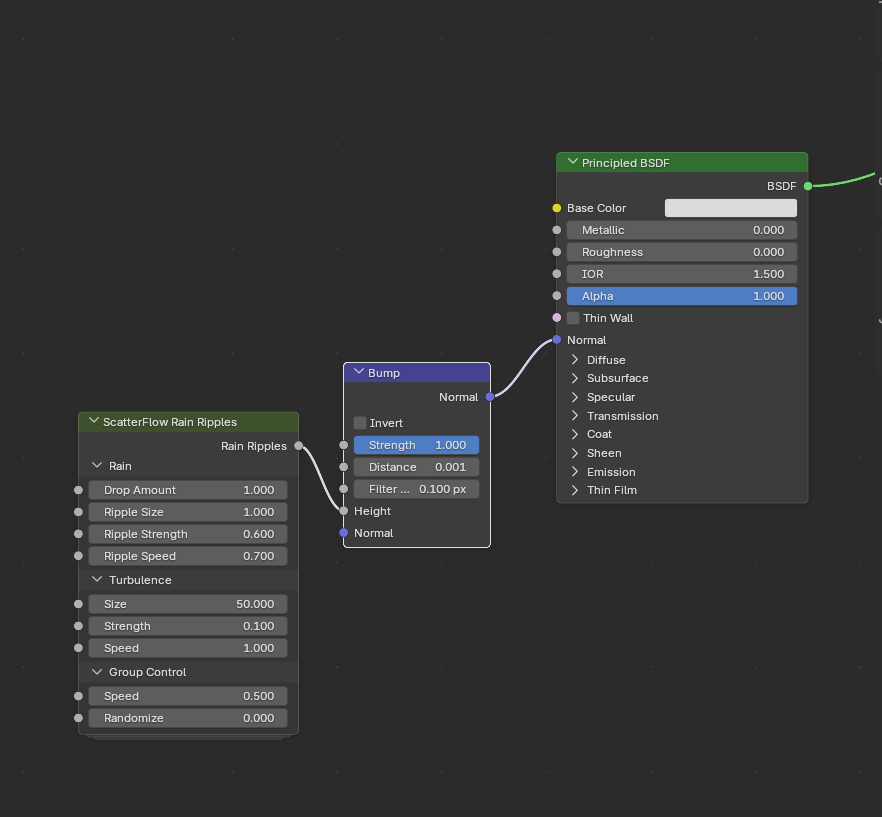
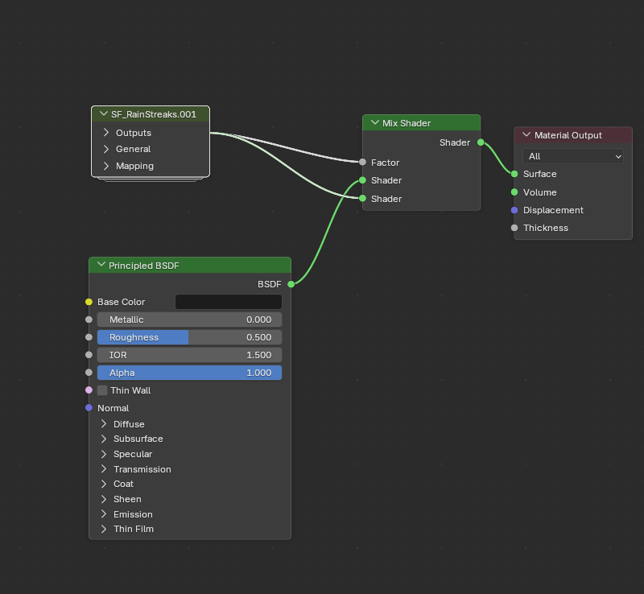

Add rain, snow, wind, and atmospheric effects from the content library
How it works
The weather and atmosphere effects come with the ScatterFlow content pack. You find them in its Weather and Atmosphere catalogs in the Asset Browser.
Most effects are objects you drag into the scene. Their settings are in the Modifier tab (the blue wrench) of the Properties editor. Rain Ripples and Rain Streaks are material nodes instead.
Most effects are animated, so press Space to play the timeline and see them move.
Drag Drizzle, Steady Rain, or Storm from Weather > Rain into the viewport. Move and scale the effect object to cover the area you need.
In the RAIN section, Rain Drop Type switches between round drops (Drop) and streaks (Line). Lines make heavy or fast rain easier to see. Rain Amount sets how heavy the rain is, and RainDrop Size sets the size of each drop.
WindX and WindY, in the Wind section, push the rain sideways to change its angle.
Splashes adds impacts where rain hits the ground. Turbulence varies the motion, and Optimization can limit the effect to the camera's view.
Use contrast to make rain visible.
Rain shows up best against a darker background. Lowering the world lighting also helps give an overcast look.
Rain Ripples

Raindrops landing on water and wet ground
Rain Ripples is a material node, not an object. It adds animated raindrop rings to puddles, roads, ponds, and other surfaces.
Drag Rain Ripples from Weather > Rain into the object's material in the Shader Editor. Connect it to the Height of a Bump node (Shift + A > Vector > Bump), then connect the Bump node's Normal to the Principled BSDF's Normal input. Ripples are easiest to see on a material with low Roughness.
Drop Amount: how many drops land. Ripple Size: the width of each ring. Ripple Strength: how deep the ripples look. Ripple Speed: how fast the rings spread. Turbulence: broader movement, like wind on the water. Group Control: the overall Speed, and Randomize for a new pattern.
Ripples too subtle?
Raise the Bump node's Distance. The right value depends on the size of the surface in your scene.
Rain Streaks

Water running down glass and walls
Rain Streaks adds animated water trails and drops to a material. Use it for windows, glass, metal panels, or wet walls.
Drag SF_RainStreaks from Weather > Rain into the object's material in the Shader Editor. Then mix it with the existing material using a Mix Shader (Shift + A > Shader > Mix Shader):
SF_RainStreaks Mask Output goes to the Mix Shader's Factor.
Your existing material, such as a Principled BSDF, goes to the first Shader input.
SF_RainStreaks BSDF goes to the second Shader input.
The Mix Shader goes to Surface on the Material Output.
Normal Strength, under General: how raised the water looks. Bump Strength: extra depth for the drops. Visibility: how strongly the streaks show over the material. Scale, under Mapping: the size of the pattern. Lower values give larger streaks. Location and Rotation position and orient it.
A UV map is required.
Streaks use the object's UVs. If it has none, add them with UV > Smart UV Project in Edit Mode. Add a sky or lights so the water has something to reflect.
Snow
Falling snow
Drag Snowfall, Flurries, or Blizzard from Weather > Snow into the scene. Place it above the area to cover, since the flakes fall from the effect object.
Density, in the Snow section, sets how many flakes fall. Min Radius and Max Radius set the range of flake sizes.
In the Wind section, Strength sets how hard the wind pushes the snow, and Direction sets which way. Simulation Speed sets how fast the snowfall runs.
Accumulation builds up snow, Turbulence adds swirling, Collision lets flakes land on chosen objects, and Instance replaces the flakes with your own objects.
Play from the start for accumulation.
Build-up is calculated from the first frame, so jumping ahead makes the simulation catch up.
Snow Cover
Snow lying on objects
Snow Cover adds settled snow to rocks, roofs, branches, fences, and other objects. You do not need to play the timeline to see it.
Put the objects in a collection, drag Snow Cover from Weather > Snow into the scene, and choose the collection in the Collission Collection field in the Snow Main section. Snow settles on the objects' upper surfaces. Where you drop Snow Cover does not matter.
Snow Type switches between Volume and Island, two ways of building the cover. Try both on your objects.
Snow Thickness sets how deep the snow is, and Smoothness rounds it off. Subdivision Level adds detail but is slower. Snow Pattern adds noise to the surface, and Scatter places small objects on the snow.
Start with a low Subdivision Level.
Detailed objects can make Snow Cover slow. Raise the level only when the final result needs the extra detail.
Wind
Making an object sway
These presets make single objects, such as trees or flags, bend and sway. For scatter layers, use Wind in Dynamics instead.
Drag Gentle Breeze, Windy, or Storm from Weather > Wind and drop it onto the object.
In the Main section, Wind Strength sets how far the object bends. Direction sets the wind direction, and Wind Speed sets how quickly the gusts change.
Bending sets how much the top bends compared with the base. Wind Noise Size sets the size of the gust pattern. Minor Wind adds small, fast movement for details such as leaves.
Falling Leaves
Leaves drifting down
Drag Falling Leafs from Atmosphere into the scene. Pick the leaf type from the Menu list. The types range from oak and maple leaves to blossom, grass, and confetti.
Count, in the Spawning section, sets how many leaves fall at once. Scale, in the Size section, sets their size, and Tumble Speed, in the Rotation section, sets how fast they spin.
In the Movement section, Fall Speed sets how fast they drop, and Sway Amount and Sway Speed set the side-to-side motion. Wind Direction blows the leaves across the scene. Curve guides them along a path you draw, such as a gust down a street.
Embers
Sparks rising from a fire
Drag Embers from Atmosphere to where the sparks should come from.
Count, in the Spawning section, sets how many embers there are. Lifetime sets how long each one lasts, which also sets how high it rises before fading.
The Movement section controls the rise and sway, and Wind Direction controls the drift.
Embers are easier to see against a dark environment.
Lower the world lighting for dusk, night, or other low-light scenes.
Dust
Specks floating in the air
Dust adds tiny particles that drift slowly through the air. Use it as a subtle touch in sunlight or interiors. Drag Dust from Atmosphere into the scene.
Count, in the Spawning section, sets how many particles there are. Keep it low for a subtle effect. Scale, in the Size section, sets their size.
In the Movement section, Settle Speed sets how slowly the particles sink, and Sway sets the side-to-side motion.
Lighting determines visibility.
Dust shows up best in strong light against a dark background, such as sunlight in a dim room.
Bug Swarm and Moths
Bug Swarm
A small cloud of circling gnats, good near water or lights. Drag BugSwarm from Atmosphere into the scene. The swarm forms above where you drop it.
The gnats are life-size, about 2 mm, so they are hard to see from a distance. Use a close camera, or raise Scale: 0.005 is life-size, and 0.25 makes them easy to see.
Count, in the Spawning section, sets how many gnats there are. In the Flight section, Circle Radius and Circling Speed set the orbit, Attraction keeps the swarm together, and Dart Amount controls sudden darts away from the group.
Match the scale to the shot.
Keep the gnats small for close-ups, and enlarge them when the swarm must stay visible in a wider view.
Moths
Larger insects that flutter around one spot, such as a lamp, porch, or campfire. Drag Moths from Atmosphere to where you want them. Search for “Moth” in the Asset Browser to find it.
Count, in the Spawning section, sets how many moths there are, and Scale sets their size. Wing Flutter, in the Rotation section, sets how fast the wings beat. The Flight section has the same circling, attraction, and darting controls as Bug Swarm.
Both Bug Swarm and Moths can follow a path. Turn on Use Curve Path in the Curve section and choose the curve.